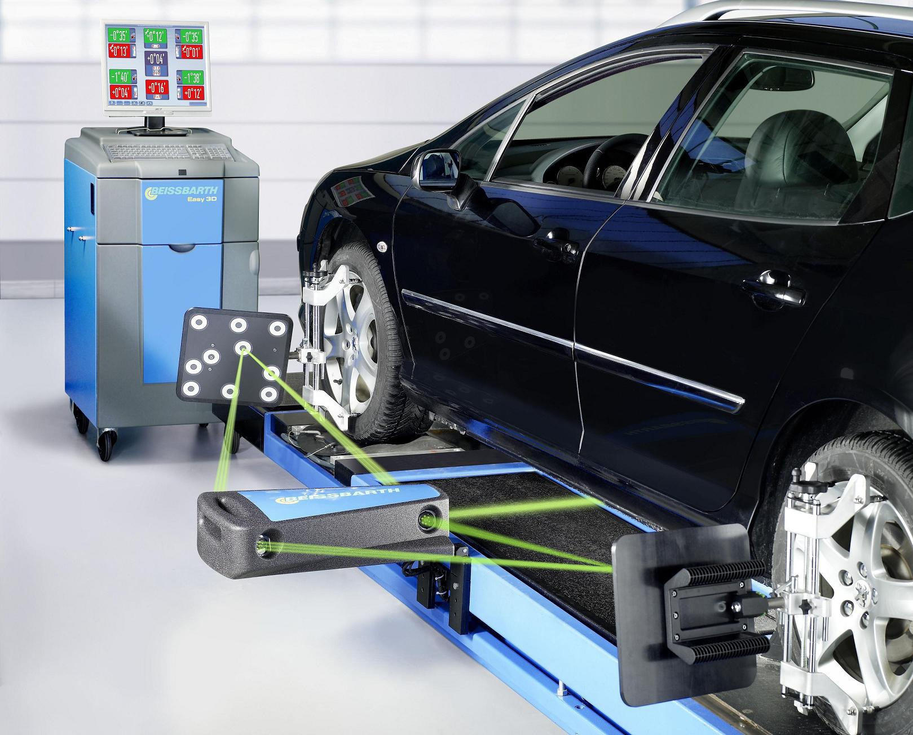
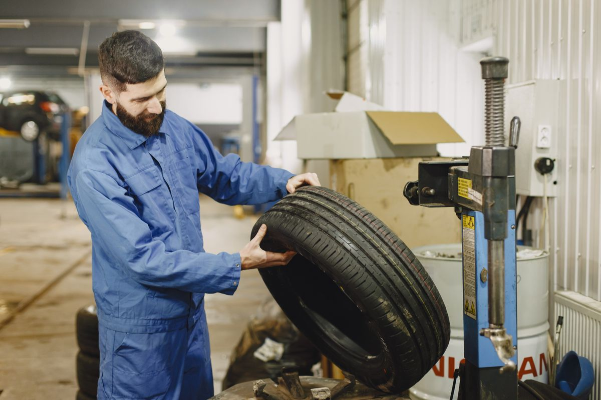

Passenger Car
City and highway options across common hatchback and sedan sizes.
Start with the vehicle specification, compare the right tyre options and pair fitment with only the wheel services the car actually needs.
We confirm the size, load and speed rating specified for the vehicle before comparing brand, pattern and price.
City and highway options across common hatchback and sedan sizes.
Road-focused and mixed-use choices matched to vehicle requirements.
Scooter and motorcycle sizes for everyday commuting and touring use.
Wear indicators are close to the tread surface.
Rubber shows age-related cracking or cuts.
A tyre needs topping up more often than expected.
One shoulder or section wears faster than the rest.
Avoid guessing. Have the tyre inspected promptly and follow professional replacement guidance.
Common availability includes established global tyre makers across passenger, SUV and two-wheeler categories.
Tyre choice and workshop service belong in one simple sequence.
Confirm size, load index and speed rating.
Review pattern, intended use, availability and price.
Mount the tyre and correct assembly imbalance.
Review symptoms and wheel-angle readings where relevant.
Alignment readings and wheel-balancer results give technicians useful evidence before adjustments or corrective weights.

Before fitment or correction, the tyre and wheel assembly still need a careful visual check. That catches condition issues a measurement alone cannot explain.

Workshop service prices can be estimated; tyre prices depend on exact size, brand and vehicle.
Computerised measurement
Pair of wheels
We’ll start with the right questions and a visual inspection.